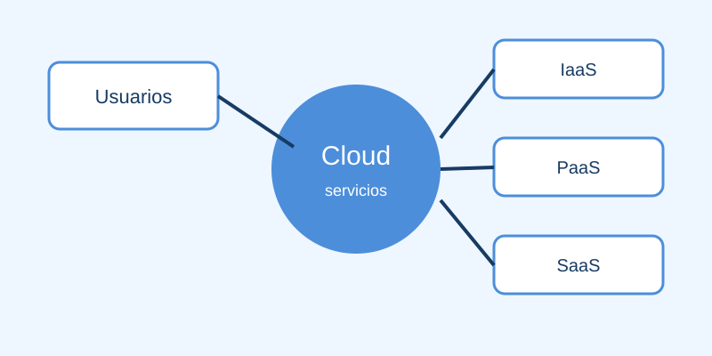

¿Qué es la computación en la nube?
La computación en la nube es un modelo que permite acceder por internet a recursos informáticos como servidores, almacenamiento, bases de datos, redes y aplicaciones. Estos recursos son administrados por proveedores especializados y se pueden solicitar bajo demanda.
En lugar de comprar y mantener toda la infraestructura, una persona o empresa puede utilizar la capacidad que necesita desde distintos dispositivos. El proveedor se encarga de gran parte del mantenimiento, mientras el cliente configura y utiliza los servicios contratados.

Características principales
La nube se caracteriza por ofrecer recursos compartidos y administrados mediante centros de datos. El acceso remoto, la automatización y la posibilidad de medir el consumo permiten utilizar tecnología sin tener todos los equipos físicamente en la organización.
- Acceso bajo demanda: los recursos se solicitan cuando son necesarios.
- Escalabilidad: la capacidad puede aumentar o disminuir según la demanda.
- Acceso remoto: los servicios pueden utilizarse desde diferentes lugares con conexión a internet.
- Medición del consumo: el uso de recursos puede monitorearse y facturarse.
Modelos de servicio cloud
Los proveedores organizan sus servicios en niveles de responsabilidad. La elección depende del control técnico que necesita el usuario y de cuánto mantenimiento desea delegar.
| Modelo | Qué ofrece | Ejemplo de uso |
|---|---|---|
| IaaS | Infraestructura virtual configurable | Crear una máquina virtual para alojar un sitio |
| PaaS | Entorno administrado para desarrollar | Publicar una aplicación sin administrar servidores |
| SaaS | Software listo para el usuario final | Usar correo electrónico desde la web |
Ventajas y ejemplos de uso
Entre sus ventajas se encuentran la reducción de inversiones iniciales, la disponibilidad de los servicios y la facilidad para colaborar. Una organización puede empezar con pocos recursos y ampliar su capacidad sin comprar nuevos servidores cada vez que crece.
La computación en la nube se utiliza para guardar copias de seguridad, alojar sitios web, ejecutar aplicaciones, analizar datos, asistir a clases virtuales y trabajar con documentos compartidos. También permite que los equipos desarrollen y prueben software en entornos disponibles por internet.
- Almacenamiento de fotografías, documentos y copias de seguridad.
- Videollamadas, correo electrónico y colaboración en línea.
- Alojamiento de páginas web y aplicaciones móviles.
- Análisis de grandes volúmenes de datos.
Consideraciones para utilizar la nube
Antes de contratar un servicio es importante revisar la seguridad, la privacidad de los datos, los costos de consumo y la disponibilidad ofrecida. También conviene conocer cómo se recuperará la información si ocurre una interrupción o si se decide cambiar de proveedor.
Para ampliar el tema, consulta las páginas de Tema 2 y Tema 3 del equipo.